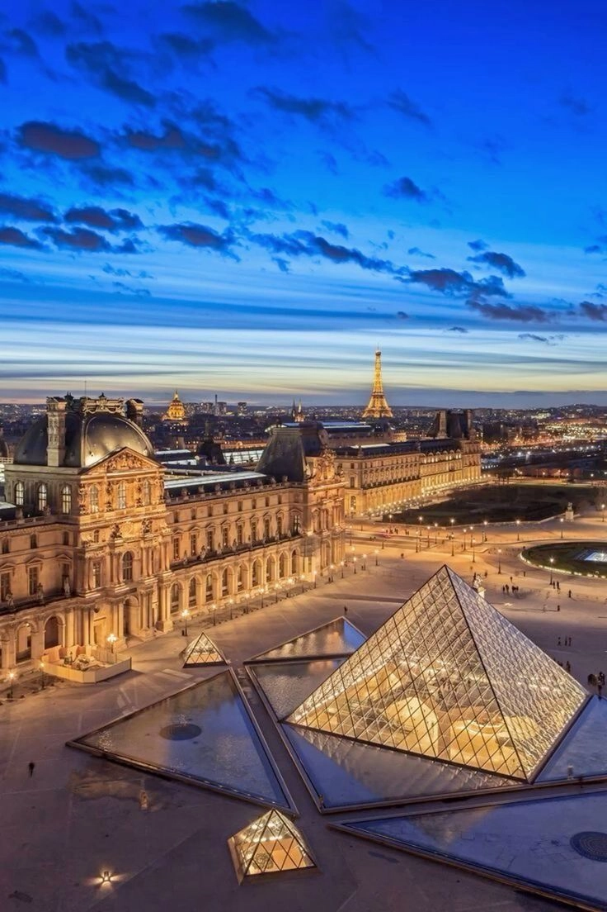
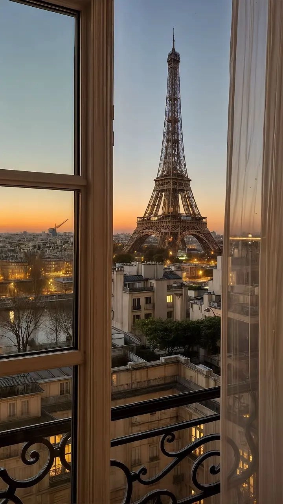
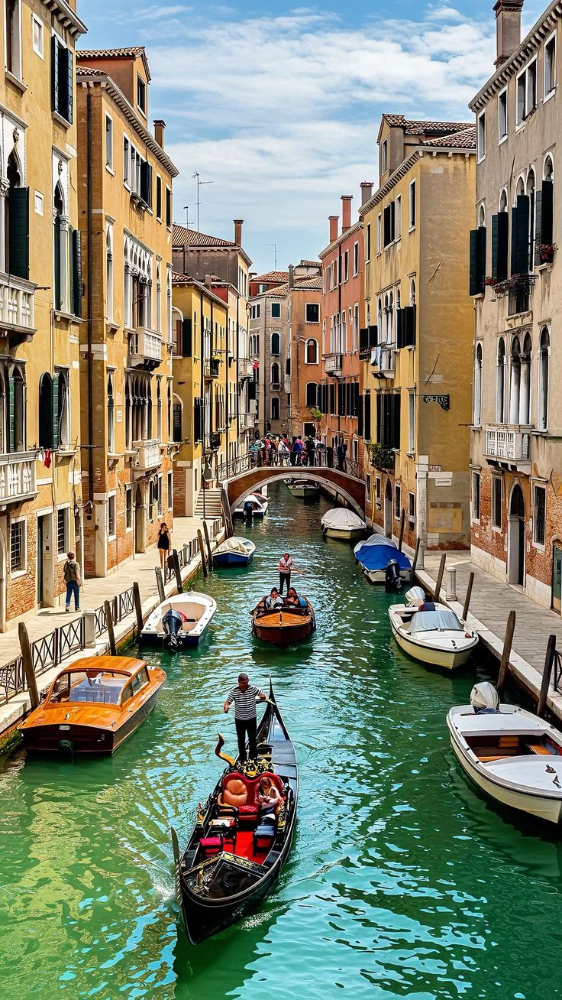
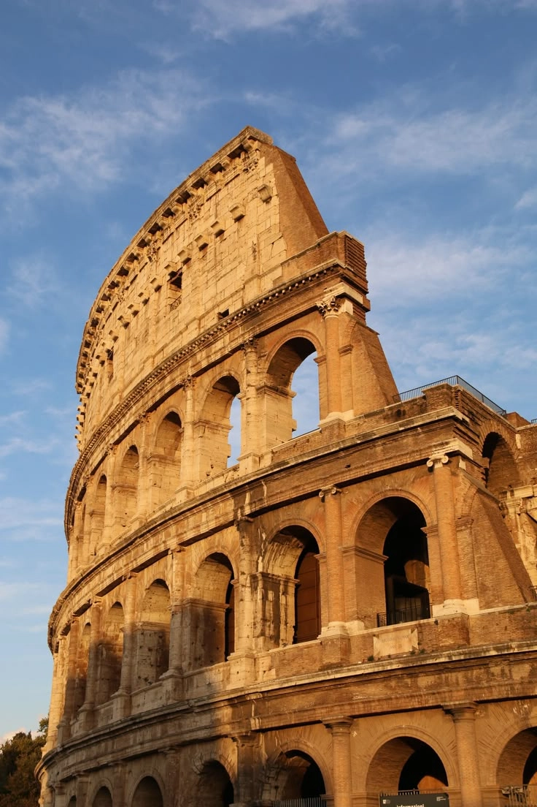

GlobalSpeaker
Descubra novos lugares e tenha novas experiencias línguisticas com a GlobalSpeaker
A Corea do Sul é onde a tradição encontra a tecnologia e vivem em perfeita harmonia
"Aprenda Coreano. O alfabeto Hangul é surpriendentemente lógico, abrindo portas para a tecnologia, o K-drama e o Hallyu(Onda Coreana) que domina o mundo!"





Descubra o idioma do charme, arte e da elegância francessa,
"Aprender Francês é mergular em uma das culturas mais sofsticadas do mundo. A lingua do amor, da alta costura, da diplomacia e da arte. Um sotque aue transforma qualquer díalogo em pura elegância. Oh là là!"





Mergulhe no idioma da arte, da moda e da paixão italiana.
"Viva o Italiano.Não é só uma língua, é música! Perrfeita para saborear a Dolce Vita, a arte renascentista e fazer os gestos mais expressivos do mundo. Mamma mia!"
Aprenda o Idioma que conecta o mundo e abre portas para novas oportunidades.
"O inglês é o idioma global- chave para se comunicar assim como a essência da GlobalSpeaker"


.webp)


.webp)